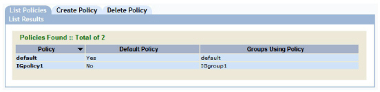
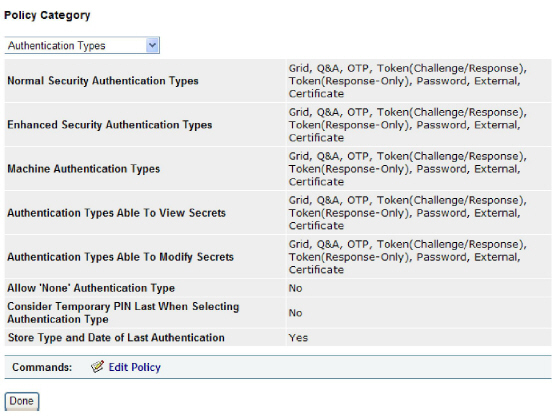
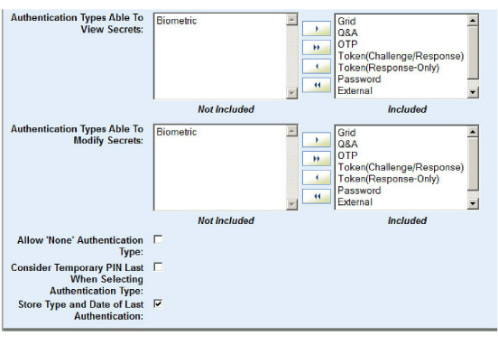

|
IdentityGuard Server 13.0 Administration Guide |
|
IdentityGuard Server 13.0 Administration Guide |
User secrets are authentication secrets (such as mutual authentication images) and shared secrets (see Administering shared secrets ). Typically, users create user secrets during registration.
Through the administration interface, you can set which authentication methods allow users to view or modify (as applicable) their user secrets.
To configure access to user secrets
1. Log in to the Entrust IdentityGuard Administration interface as the administrator.
 On the
Windows computer where Entrust IdentityGuard is installed
On the
Windows computer where Entrust IdentityGuard is installed
2. In the main menu, click Policies.
A list of all policies appears on the List Policies tab.

3. Click any policy name to view its policy information.
The View Policy page appears and lists all policy settings.
4. Under Policy Category, select Authentication Types from the drop-down list.

5. On the View Policy page, click Edit Policy.
An editable version of the settings appears.

6. For the Authentication Types Able To View Secrets policy, set which authentication methods allow users to view their user secrets.
By default, all authentication methods except biometric authentication allow users to view their user secrets (methods are in the Included list). See Move items between option lists for detailed instructions for moving options between the Included and Not Included lists.
7. For the Authentication Types Able To Modify Secrets policy, set which authentication methods allow users to modify their user secrets.
By default, all authentication methods except biometric authentication allow users to modify their user secrets (methods are in the Included list). See Move items between option lists for detailed instructions for moving options between the Included and Not Included lists.
8. You must select Allow ‘None’ Authentication Type if you have included None in the Normal or Enhanced Security Authentication Types.
9. .Select Store Type and Date of Last Authentication if you want to be able to search and report on this data. When this policy is enabled, the last authentication time and type are stored for both users and administrators. Store Type and Date of Last Authentication is enabled by default.
10. Click Save Changes.